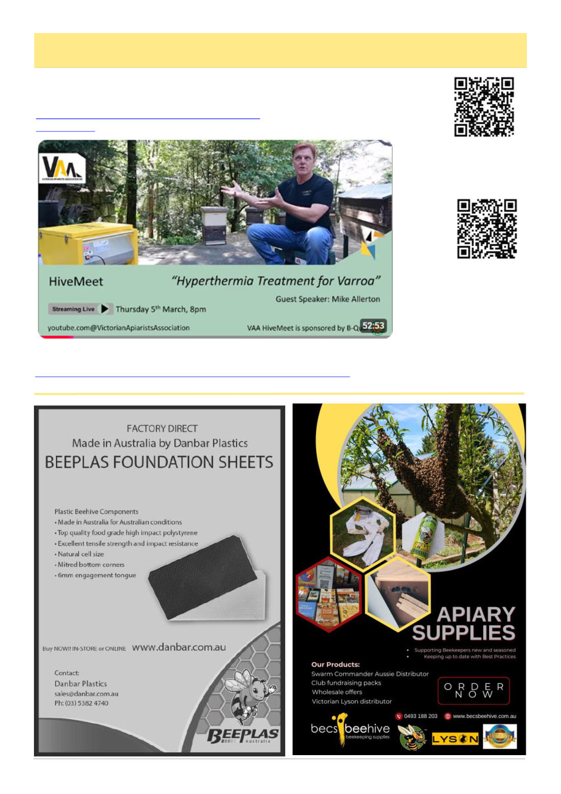

April 2026
21
Interesting Podcasts / Webcasts Of The Last Month
(Continued on page 22)
By Kris Fricke
VAA HiveMeets:
March 5th – Hyperthermia Treatment for Varroa with
Videos from the Swanpool Workshop for Commercial Beekeepers, March 9th 2026
Honey Bee Immunity and Varroa Mites with Olivia Ducommun-Dit-Varroa